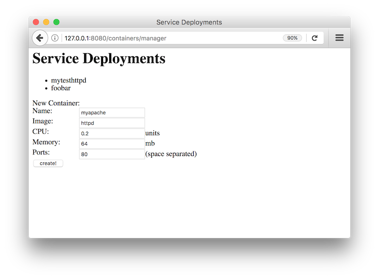

|

|

|
Aries Containers¶Aries Containers is an Apache Aries subproject to manage container deployments, such as docker-based microservices, from a Java API. Many technologies exist to manage container deployments. Examples include Kubernetes, Marathon/Mesos, Docker Swarm, Amazon ECS and others. While each technology provides specific features, many of these management technologies share common behaviour. Aries Containers provides an abstraction that allows users to easily switch between these technologies. Benefits:
Current Aries Containers modules:
This project could influence the design process of the OSGi RFP 179. Source¶The Aries RSA source is in a separate git repository aries-containers there is also a mirror on github. To build the source, just run:
Java 1.8 or higher is required. Maven 3.3.9+ is recommended. Quick Start¶The easiest way to get started is with the examples and the local docker binding. Aries Containers work well in an OSGi environment where bindings are provided as OSGi services. As an alternative, Aries Containers can also be used in a plain Java environment. Instead of obtaining the bindings from the service registry, they need to be instantiated directly in this case. OSGi example¶The OSGi example uses the Felix SCR implementation to get the currently active ServiceManager injected into a simple servlet. The servlet provides a simple UI to perform some of the management operations. The servlet is written using OSGi Declarative Service annotations and OSGi Http Whiteboard annotations and can be found here: ServiceManagerServlet.java Main functionality of the servlet can be summarized as follows: @Component(service = Servlet.class,
property = {HttpWhiteboardConstants.HTTP_WHITEBOARD_SERVLET_PATTERN + "=/manager"})
public class ServiceManagerServlet extends HttpServlet {
@Reference
ServiceManager serviceManager;
@Override
protected void doGet(HttpServletRequest req, HttpServletResponse resp) throws ServletException, IOException {
PrintWriter pw = resp.getWriter();
pw.println("<BODY><H1>Service Deployments</H1>");
pw.println("<UL>");
for (String dep : serviceManager.listServices()) {
pw.println("<LI>" + dep);
}
In short - an OSGi Declarative Service Component is registered as a HTTP Whiteboard Servet. The Aries Containers Service Manager is
injected into the This demo can be launched in any OSGi framework that supports Declarative Services and the HTTP Whiteboard. For example, to run this demo with the Apache Felix OSGi framework, add:
Then add the Aries Containers implementation with the appropriate binding and their dependencies. To run with the Docker Local binding, add
Finally add the OSGi demo bundle itself. The resulting bundle list will look like this: lb START LEVEL 1 ID|State |Level|Name 0|Active | 0|System Bundle (5.6.4)|5.6.4 1|Active | 1|jansi (1.16.0)|1.16.0 2|Active | 1|JLine Bundle (3.3.0)|3.3.0 3|Active | 1|Apache Felix Bundle Repository (2.0.10)|2.0.10 4|Active | 1|Apache Felix Gogo Command (1.0.2)|1.0.2 5|Active | 1|Apache Felix Gogo JLine Shell (1.0.6)|1.0.6 6|Active | 1|Apache Felix Gogo Runtime (1.0.6)|1.0.6 7|Active | 1|Apache Felix Declarative Services (2.0.10)|2.0.10 8|Active | 1|Apache Felix Http Jetty (3.4.2)|3.4.2 9|Active | 1|Apache Felix Servlet API (1.1.2)|1.1.2 10|Active | 1|Apache Felix Http Whiteboard (3.0.0)|3.0.0 11|Active | 1|Apache Felix Configuration Admin Service (1.8.14)|1.8.14 12|Active | 1|Apache Felix EventAdmin (1.4.8)|1.4.8 13|Active | 1|Apache Aries Containers API (0.0.1.201705261547)|0.0.1.201705261547 14|Active | 1|Apache Aries Containers impl for local Docker use (0.0.1.201705291452)|0.0.1.201705291452 15|Active | 1|slf4j-api (1.7.25)|1.7.25 16|Resolved | 1|slf4j-simple (1.7.25)|1.7.25 17|Active | 1|Container Example OSGi Servlet (0.0.1.201705291444)|0.0.1.201705291444 Now you can access the servlet at http://localhost:8080/containers/manager  After adding a container you can inspect its result by querying $ docker ps CONTAINER ID IMAGE COMMAND STATUS PORTS NAMES 7cc5c753777e httpd "httpd-foreground" Up 4 seconds 0.0.0.0:51467->80/tcp myapache Plain Java example¶This example launches a small Java Application to create a service deployment. Initially a single container is deployed. The user can modify the number of replicas from within the application. The code can be found here: Main.java The main functionality is: ServiceManager sm = new LocalDockerServiceManager(); // If you want to run with Marathon, use the following line // ServiceManager sm = new MarathonServiceManager("http://192.168.99.100:8080/"); ServiceConfig sc = ServiceConfig.builder("mytesthttpd", "httpd"). cpu(0.2).memory(32).port(80).build(); Service svc = sm.getService(sc); // The service is now created If you are running this the Docker local binding, you can see the docker container created: $ docker ps CONTAINER ID IMAGE COMMAND STATUS PORTS NAMES 7cc5c753777e httpd "httpd-foreground" Up 4 seconds 0.0.0.0:51467->80/tcp mytesthttpd The example also allows scaling up and down of replica containers for this service. Bindings¶Docker Local¶This binding works by issuing OSGi ServiceManager identifier property: Constructor, for use outside of OSGi: Marathon¶This binding uses Marathon as the underlying container manager. It requires the following configuration to be set: service.pid: org.apache.aries.containers.marathon marathon.url=<the URL where marathon can be contacted> Once configured, the Marathon binding will register its OSGi service. OSGi ServiceManager identifier property: Constructors, for use outside of OSGi: /** * Create the Marathon Service Manager. * * @param marathonURL The Marathon URL */ public MarathonServiceManager(String marathonURL); /** * Create the Marathon Service Manager for use with DC/OS. * * @param marathonURL The Marathon URL. * @param dcosUser The DCOS user or service-user. * @param passToken The password or token to use. * @param serviceAcct `true` if this is a service account `false` if this is a plain user. */ public MarathonServiceManager(String marathonURL, String dcosUser, String passToken, boolean serviceAcct); |